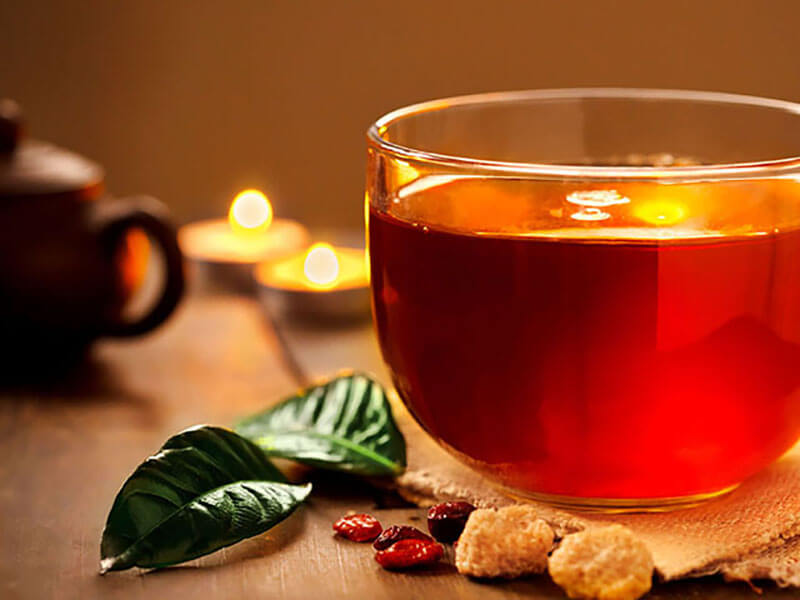

Green Tea
绿茶保存绿色格调。常饮能防癌，降脂和减肥，对吸烟者也可减轻其受到的尼古丁伤害。
绿茶

Black Tea
我国红茶品种以祁门红茶和武夷红茶最为著名。红茶具有红茶、红汤、红叶和香甜味醇的特征，香气物质比鲜叶明显增加。
红茶
White Tea
白茶属轻微发酵，采摘后不经杀青或揉捻，只经晒或文火干燥后加工的茶。因其成品茶多为芽头，满披白毫，如银似雪而得名。
白茶
Yellow Tea
黄茶品质特点是“黄叶黄汤”。其按鲜叶老嫩芽叶大小又分为黄芽茶、黄小茶和黄大茶。湖南岳阳为中国黄茶之乡。
黄茶
Euroblack Tea
欧式红茶原料基本都取于印度、斯里兰卡、尼泊尔，然后根据西方口味将茶拼配，形成了自己稳定风格红茶系列茶。
欧式红茶
dark Tea
黑茶属后发酵茶，因成品茶外观呈黑色得名。传统黑茶采用的黑毛茶原料成熟度较高，待压制紧压后可长期存放。
黑茶

Matcha Tea
中国古时称作末茶，起源于中国隋唐，自明代以来，不再流行抹茶而改用茶叶，冲泡喝汤，弃置茶渣。
抹茶